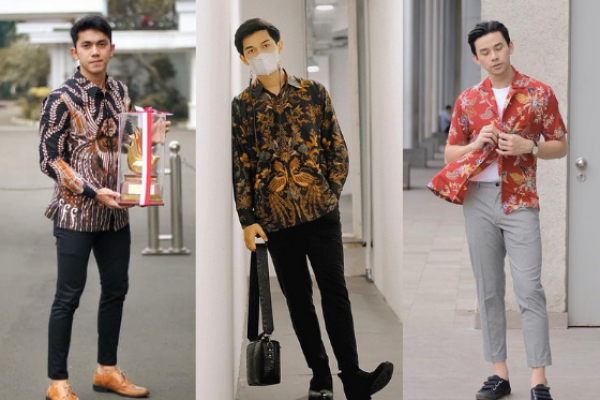

Fashion Pria Terupdate, Menyediakan Trend Pakaian Kemeja Pria 2023
Toko baju online ini menyediakan berbagai macam pakaian pria, dengan trend dan style dan model baju pria terbaru 2023. Mulai dari kaos pria, kemeja pria, kemeja polos, Batik pria, kemeja batik. Fashion seolah telah menjadi kebutuhan dan gaya hidup. Toko pakaian pria ini berupaya menjawab semua kebutuhan fashion pria, dengan menyediakan beragam pilihan pakaian pria remaja dan dewasa, dan beraneka pilihan yang selalu mengikuti perkembangan dalam dunia fashion pria. Kita selalu mengikuti perkembangan trend fashion pria 2023, yang kini sedang ngetrend kaos printing, kaos longline t-shirt, kaos raglan, celana jeans ripped, celana biker jeans, celana bahan, celana formal, jeans ankle zip, kemeja flanel pria, kemeja polos pria, kemeja hawaii, baju imlek pria, baju natal cowok, kemeja revere collar, vest/rompi formal, kemeja grandad, jaket bomber, kemeja denim, baju batik atau kemeja batik. Saat memasuki bulan suci Ramadhan toko baju pria ini juga menyediakan fashion pria baju muslim atau baju koko.Supplier Pakaian Pria Terpercaya untuk Toko Baju Online Anda
Sedang mencari supplier baju pria murah untuk toko / online shop anda? Tersedia harga yang menarik untuk Toko Retail & Reseller Baju Pria atau Dropship Fashion Pria. Toko fashion pria ini membuka peluang sebesar-besarnya untuk bergabung menjadi reseller maupun dropshiper, dengan berbagai kemudahan dan keuntungan, berpenghasilan bahkan tanpa modal dan dapat dilakukan dimana saja. Segera daftar menjadi reseller fashion pria di Myu BatikDapatkan Koleksi Baju Batik Pria untuk Kondangan maupun Ngantor Terbaru
Batik merupakan salah satu pakaian khas kebudayaan asli Indonesia yg dulunya Baju batik hanya dipakai oleh bangsawan. Namun seiring dengan perkembangan jaman, baju batik menyebar hingga ke berbagai pelosok nusantara. Kini batik tidak hanya dipakai sebagai kain selendang atau kemben saja namun sudah ada banyak sekali kreasi dan inovasi batik. Salah satunya adalah baju batik pria. Baju batik pria kini tidak hanya dipakai pada acara resmi atau ke kondangan / resepsi pernikahan. Baju batik pria juga menjadi salah satu baju seragam batik wajib bagi para pekerja di seluruh Indonesia di hari rabu hingga jumat. Untuk mendukung penampilan Anda sewaktu bekerja, maka Anda bisa mengenakan koleksi batik yang menarik dan memiliki motif yang elegan. Koleksi kemeja batik di Myu Batik bisa mendukung penampilan Kamu ke kantor maupun kondangan.Toko Baju Pria Online Termurah di Indonesia, Solusi belanja baju cowok murah Dapatkan kol
Dapatkan koleksi baju pria keren dengan harga dan mutu terbaik dalam melengkapi kebutuhan fashion pria Anda hanya di Myu Batik. Toko baju online ini berdiri sejak tahun 2010 yang memulai bisnis fashion pria online dari website, dan untuk mempermudah pelanggannya bertransaksi Frozenshop.com juga hadir dalam bentuk mobile application. Untuk mempermudah transaksi Kamu bisa Download aplikasi mobile Frozenshop.com di Google Play maupun App Store dengan search keyword Myu Batik. Solusi belanja baju pria, pakaian pria, atau fashion pria dengan harga murah.
Kemeja yg best seller dari toko kami

Disini juga ada kemeja flanel yg cakep

Banyak Warna yg bagus-bagus

Ada berbagai macam-macam koko dan masih banyak produk yg kami ready